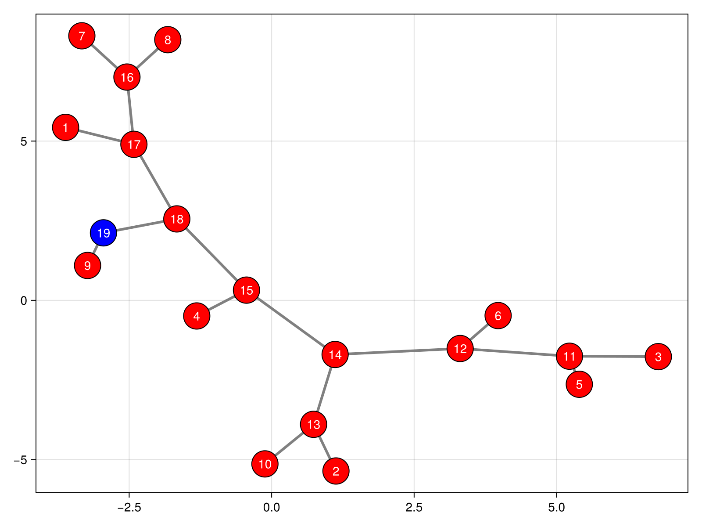
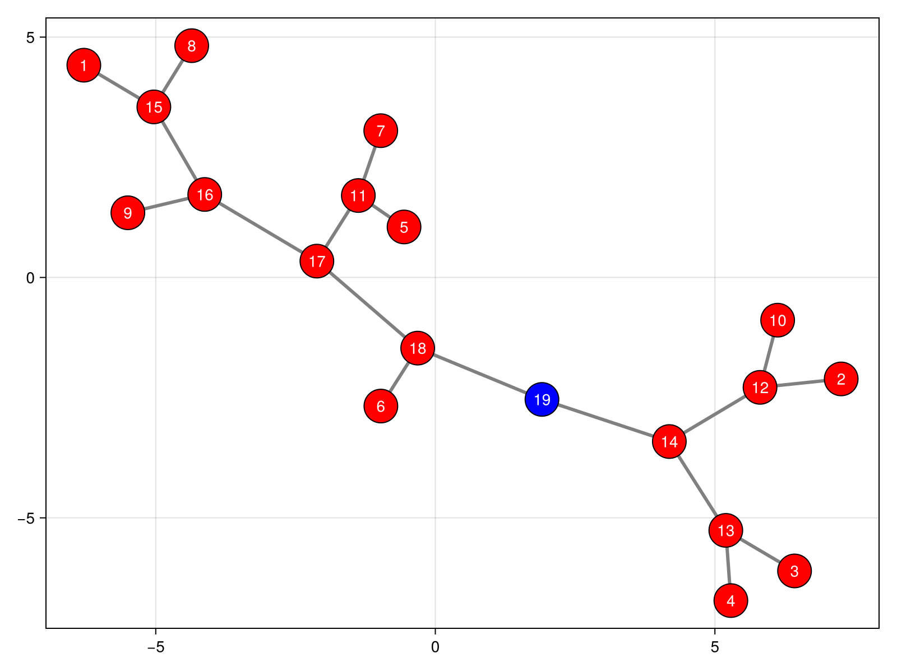
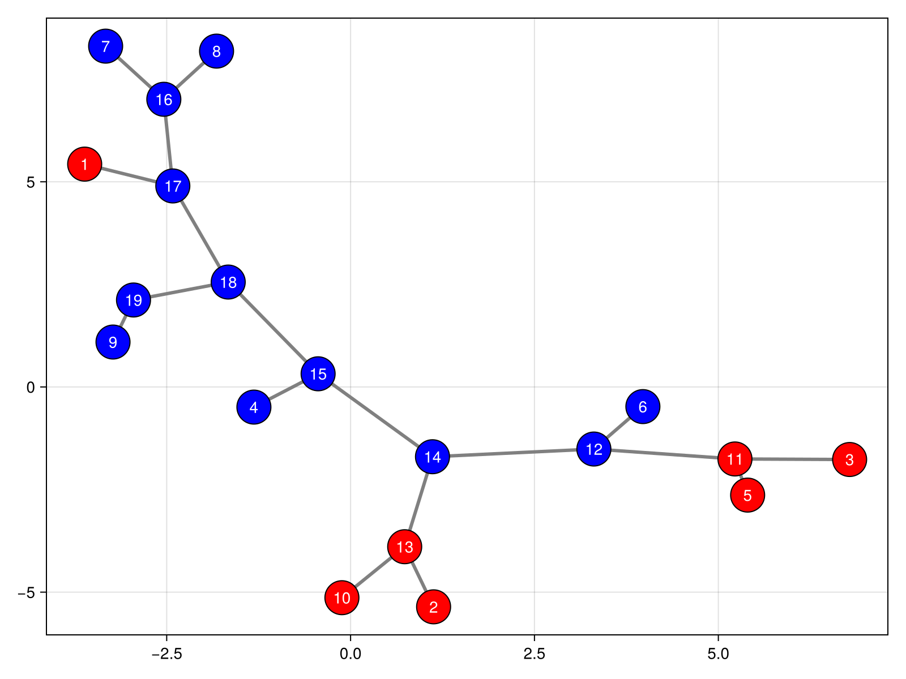
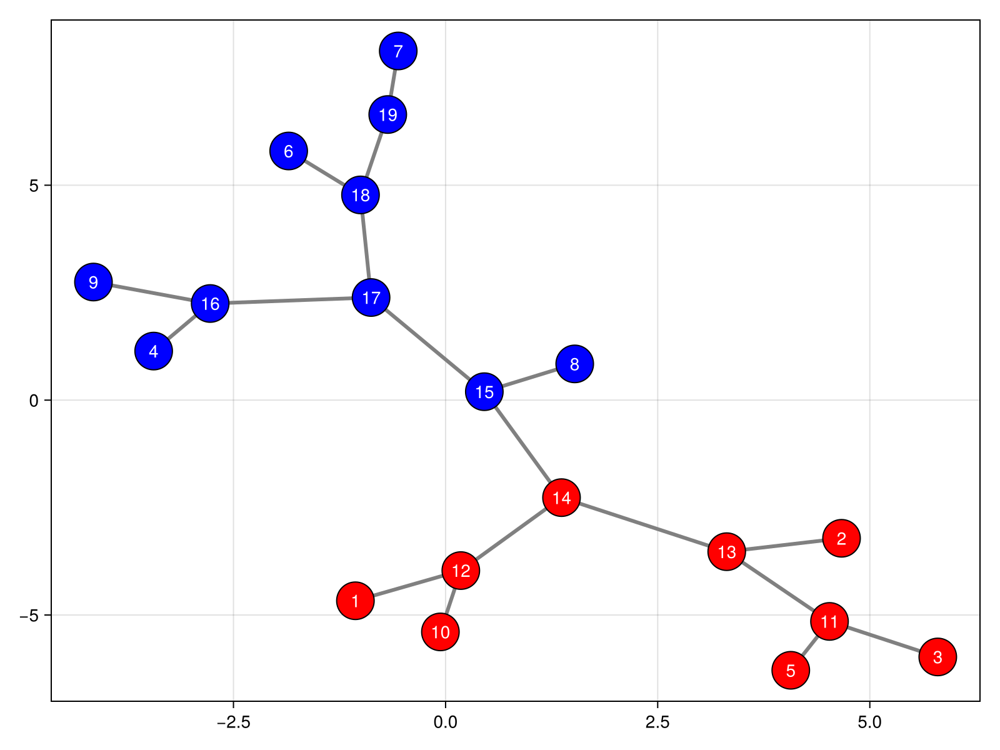

Quick Start
- Storing Haplotypes: the
SampleType - Coalescent Trees: the
Treetype - Ancestral Recombination Graphs: the
ArgType
The aim of this page is to present the package's main functionalities and guide you in inferring your first ancestral recombination graph. Moonshine allows you to do things like implement your own exotic model of ancestry and even crazy stuff like analyzing ARGs as linear operators; tutorials on those more advanced topics will follow soon.
As of writing these lines, Julia's dominance in the field of molecular biology has not yet been achieved. We understand that many users might have little to no experience with it. This guide is written with that in mind. The aim is for an average Python user to have a satisfactory graph inference experience after what we expect to be a short and somewhat enjoyable read. In particular, short explanations of differences between Julia and more mainstream languages are given when relevant: keep your eyes peeled for Julia👶 admonitions. On that matter, the official documentation provides short and to the point descriptions of noteworthy departures from Python, R, C/C++, MATLAB and Common Lisp.
Feedback, especially from first-time users, is appreciated
Storing Haplotypes: the Sample Type
{tl;dr} Types are classes (in the OOP sense)
In Julia, the concept of type is roughly equivalent to that of class in Python, C++ or MATLAB. Functionally, the expression "class T" can often be substituted for "type T". However, Julia's types underlie a generic function-based dispatch system and are more similar to R's S3 or Common Lisp's CLOS classes.
Since we are inferring rather than simulating ARGs, we need some way to store data about haplotypes of interest. In Moonshine, the Sample type provides this functionality. Before getting into the nitty-gritty, a few things to keep in mind about the data itself:
- only biallelic markers are supported;
- there is currently no support for ploidy other than 1;
- data should be phased (which is basically a consequence of the last restriction);
- the wild (ancestral) allele should be known and encoded as 0 for every marker.
These limitations, especially the one regarding ploidy, might change in the future.
A neat feature of Moonshine is its ability to transparently call msprime to generate a high quality sample. This should work out of the box: if you installed Moonshine as described in the README, you should have received a pre-packaged version of msprime at the same time. You only need to:
- import Moonshine;
- import an RNG;
- instantiate the RNG;
- construct a sample.
This can be done interactively via the Julia REPL:
julia> using Moonshinejulia> using Random: Xoshirojulia> rng = Xoshiro(42)Random.Xoshiro(0xa379de7eeeb2a4e8, 0x953dccb6b532b3af, 0xf597b8ff8cfd652a, 0xccd7337c571680d1, 0xc90c4a0730db3f7e)julia> s = Sample(rng, 10, 1e-8, 1e-8, 1e4, 1e6)10-element Sample: ▄▄▄▄▄▄▄▄▄▄▄▄▄▄▄▄▄▄▄▄▄▄▄▄▄▄▄▄▄▄▄▄▄▄▄▄▄▄▄▄▄▄▄▄▄▄▄▄▄▄▄▄▄▄▄▄▄▄▄▄▄▄▄▄▄▄▄▄▄ ▄▄▄▄▄▄▄▄▄▄▄▄▄▄▄▄▄▄▄▄▄▄▄▄▄▄▄▄▄▄▄▄▄▄▄▄▄▄▄▄▄▄▄▄▄▄▄▄▄▄▄▄▄▄▄▄▄▄▄▄▄▄▄▄▄▄▄▄▄ ▄▄▄▄▄▄▄▄▄▄▄▄▄▄▄▄▄▄▄▄▄▄▄▄▄▄▄▄▄▄▄▄▄▄▄▄▄▄▄▄▄▄▄▄▄▄▄▄▄▄▄▄▄▄▄▄▄▄▄▄▄▄▄▄▄▄▄▄▄ ▄▄▄▄▄▄▄▄▄▄▄▄▄▄▄▄▄▄▄▄▄▄▄▄▄▄▄▄▄▄▄▄▄▄▄▄▄▄▄▄▄▄▄▄▄▄▄▄▄▄▄▄▄▄▄▄▄▄▄▄▄▄▄▄▄▄▄▄▄ ▄▄▄▄▄▄▄▄▄▄▄▄▄▄▄▄▄▄▄▄▄▄▄▄▄▄▄▄▄▄▄▄▄▄▄▄▄▄▄▄▄▄▄▄▄▄▄▄▄▄▄▄▄▄▄▄▄▄▄▄▄▄▄▄▄▄▄▄▄ ▄▄▄▄▄▄▄▄▄▄▄▄▄▄▄▄▄▄▄▄▄▄▄▄▄▄▄▄▄▄▄▄▄▄▄▄▄▄▄▄▄▄▄▄▄▄▄▄▄▄▄▄▄▄▄▄▄▄▄▄▄▄▄▄▄▄▄▄▄ ▄▄▄▄▄▄▄▄▄▄▄▄▄▄▄▄▄▄▄▄▄▄▄▄▄▄▄▄▄▄▄▄▄▄▄▄▄▄▄▄▄▄▄▄▄▄▄▄▄▄▄▄▄▄▄▄▄▄▄▄▄▄▄▄▄▄▄▄▄ ▄▄▄▄▄▄▄▄▄▄▄▄▄▄▄▄▄▄▄▄▄▄▄▄▄▄▄▄▄▄▄▄▄▄▄▄▄▄▄▄▄▄▄▄▄▄▄▄▄▄▄▄▄▄▄▄▄▄▄▄▄▄▄▄▄▄▄▄▄ ▄▄▄▄▄▄▄▄▄▄▄▄▄▄▄▄▄▄▄▄▄▄▄▄▄▄▄▄▄▄▄▄▄▄▄▄▄▄▄▄▄▄▄▄▄▄▄▄▄▄▄▄▄▄▄▄▄▄▄▄▄▄▄▄▄▄▄▄▄ ▄▄▄▄▄▄▄▄▄▄▄▄▄▄▄▄▄▄▄▄▄▄▄▄▄▄▄▄▄▄▄▄▄▄▄▄▄▄▄▄▄▄▄▄▄▄▄▄▄▄▄▄▄▄▄▄▄▄▄▄▄▄▄▄▄▄▄▄▄ size = 10, length = 1.0e6, μ = 1.0e-8, ρ = 1.0e-8, Ne = 10000.0
The first line imports the Moonshine module and exposes its exported symbols. The second line imports and exposes the Xoshiro symbol from the Random module. The third line instantiates the Xoshiro type, creating an RNG seeded at 42. As you might have guessed, the instance is stored in a variable called rng. The last line creates the sample, calling msprime.sim_ancestry under the hood. The meaning of each positional argument is detailed in Sample's documentation.
Random is part of Julia's standard library, so you do not have to explicitly install it (although you still have to import it and its symbols). A complete list of the standard library’s modules is available in the Official documentation, section "Standard Library".
If you have a decent terminal with good Unicode support, you should get an output similar to the one above. Otherwise, do yourself a favor and download a modern terminal emulator (list here).
If you're new to Julia, yes, we can be fast and look good. Sequences are displayed as one-dimensional heatmaps for convenience. You can get a slightly more detailed output using the plot_sequence method:
julia> plot_sequence(s[1])563-markers Sequence 7 ▄▄▄▄▄▄▄▄▄▄▄▄▄▄▄▄▄▄▄▄▄▄▄▄▄▄▄▄▄▄▄▄▄▄▄▄▄▄▄▄▄▄▄▄▄▄▄▄▄▄▄▄▄▄▄▄▄▄▄▄▄▄▄▄▄▄▄▄▄ ┌──┐ ▄▄▄▄▄▄▄▄▄▄▄▄▄▄▄▄▄▄▄▄▄▄▄▄▄▄▄▄▄▄▄▄▄▄▄▄▄▄▄▄▄▄▄▄▄▄▄▄▄▄▄▄▄▄▄▄▄▄▄▄▄▄▄▄▄▄▄▄▄ │▄▄│ ▄▄▄▄▄▄▄▄▄▄▄▄▄▄▄▄▄▄▄▄▄▄▄▄▄▄▄▄▄▄▄▄▄▄▄▄▄▄▄▄▄▄▄▄▄▄▄▄▄▄▄▄▄▄▄▄▄▄▄▄▄▄▄▄▄▄▄▄▄ │▄▄│ #1 ▄▄▄▄▄▄▄▄▄▄▄▄▄▄▄▄▄▄▄▄▄▄▄▄▄▄▄▄▄▄▄▄▄▄▄▄▄▄▄▄▄▄▄▄▄▄▄▄▄▄▄▄▄▄▄▄▄▄▄▄▄▄▄▄▄▄▄▄▄ └──┘ 1 1 281 563
The result is a little bit distorted (at least on my browser) but should look alright on your terminal. Notice how we extracted the first (arrays start at 1 over here) sequence? If you have a look at Sample's documentation, you will notice two things. First, the Sample type is a subtype of abstract type AbstractVector{Sequence} (the <: AbstractVector{Sequence} bit). This is similar to inheritance: any argument of type AbstractVector{Sequence} (or a supertype thereof, for that matter) is satisfiable by a Sample in a method call. Second, Sample implements two interfaces: the array interface and the iteration interface. This means we can basically treat them as arrays (like we did) and as iterables (using a for loop or a higher order function such as Base.argmax).
Coalescent Trees: the Tree type
Now that we have some data, it's time to build our first coalescent tree. A quick look at Tree's documentation reveals that it can be constructed from a sample:
julia> tree = Tree(s)Coalescent Tree: 10 leaves, 563 markers tMRCA: 0.0
Conveniently, the REPL displays that tree is a coalescent tree with 10 leaves (corresponding to the 10 sequences in s) and 563 markers. The tMRCA, which is the latitude of the sample's "grand" MRCA, is 0. This is because there is a distinction between constructing a tree, which merely means instantiating Tree, and building it. The latter stands for sampling a topology (in a graph-theoretical sense, vertices & edges) and latitudes (coalescence times). Right now, the topology of tree is that of an edgeless graph with 10 isolated vertices. Let's do something about it. We build a tree with the build! method:
julia> rng_orig = copy(rng)Random.Xoshiro(0xbf2f40be8412b9bf, 0xf6c38767defa2439, 0x617f83aaed5d5654, 0x85c528b78c215110, 0xc90c4a0730db3f7e)julia> build!(rng, tree)Coalescent Tree: 10 leaves, 563 markers tMRCA: 4.187553572255137
Notice the '!' character at the end of build!? This is called a "bang" so that the method would be pronounced "build-bang". An informal but widely adopted naming convention in Julia (and some other languages) is to end functions that mutate at least one argument with a bang. Technically, build! mutates rng, but we usually don't bother for such uses of random number generators. tree, however, is mutated, hence the bang! Conversely, you can generally assume bang-less functions not to mutate anything.
I added the first line for repeatability; it will come in handy later. We can ignore it for now. Before explaining the building process any further, we take a quick break to talk about visualization. First, a neat little histogram of tree's latitudes can be obtained via the plot_latitudes method:
julia> plot_latitudes(tree)Vertices' Latitudes ┌ ┐ [0.0, 1.0) ┤█████████████████████████████████████ 5 [1.0, 2.0) ┤██████████████▊ 2 [2.0, 3.0) ┤███████▍ 1 [3.0, 4.0) ┤ 0 [4.0, 5.0) ┤███████▍ 1 └ ┘
While it's not going to win any beauty contest soon, it's quick, easy, and since it's plain text, you can literally do a copy & paste and text it to someone special. That's for the latitudes, but what about the topology? You can plot that too, provided you installed two packages:
- GraphMakie;
- GLMakie (or any other Makie backend).
You can then plot tree via the plot_genealogy method:
julia> using GraphMakie
julia> using GLMakie
julia> plot_genealogy(tree)After some time, you should obtain the following plot:  This is all good and well, but you might wonder about the distribution of tree. tree is a coalescent tree in the graph-theoretical sense, meaning that it is a full binary tree. Since we are working conditional on a sample of haplotypes however, it does not follow the "classical" distribution inherited from Kingman's seminal paper. Moonshine's default distribution for coalescent trees is related to three things:
- the mutation rate;
- the Hamming distance between sequences;
- a bias parameter that favors coalescence between similar sequences.
Mutation events induce a distance between haplotypes, namely the number of events necessary to turn one into another. For sequences of binary markers, this is simply the Hamming distance. Moonshine assumes that mutation events are distributed according to a Poisson process with user-defined mutation rate and sample coalescence events accordingly. That being said, we might want to tweak the sampling distribution in certain scenarios. One simple example is that of the infinite site model in which each site is allowed to mutate at most once. This can be implemented via a degenerate Poisson process, so to speak, where the distance between two haplotypes is 0 if they are identical and infinite otherwise. In order to enable the implementation of such models, distances can be biased via a user-defined parameter. A bias value of $b$ will add $bd$ to a distance $d$.
Enough talking, let's put that into practice. The mutation rate is defined by the use as described in the previous section). Bias can be tuned via the bias0 keyword argument of build!. Valid values go from 0 (no bias, default value) to Inf (strong bias). Let's build a tree similar to the previous one but with infinite bias:
julia> rng = copy(rng_orig)Random.Xoshiro(0xbf2f40be8412b9bf, 0xf6c38767defa2439, 0x617f83aaed5d5654, 0x85c528b78c215110, 0xc90c4a0730db3f7e)julia> tree0 = Tree(s)Coalescent Tree: 10 leaves, 563 markers tMRCA: 0.0julia> build!(rng, tree0, bias0 = Inf)Coalescent Tree: 10 leaves, 563 markers tMRCA: 1.6709393842942817
julia> plot_latitudes(tree0)Vertices' Latitudes ┌ ┐ [0.0, 0.5) ┤█████████████████████████████████████ 4 [0.5, 1.0) ┤███████████████████████████▋ 3 [1.0, 1.5) ┤█████████▍ 1 [1.5, 2.0) ┤█████████▍ 1 └ ┘
julia> plot_genealogy(tree0) Notice the difference from the previous plot, even though we used the same sample and RNG. Alright, one last tree example. A common requirement for spatial ARG inference algorithms is building a tree consistent with the leftmost marker. To accomplish that, we need to abandon Hamming distance, since it considers all markers. Moonshine ships with the LeftM "distance", which is nothing more than the discrete metric on the leftmost marker. First, let's have a look at the situation on tree. We can color vertices according to the status of their leftmost marker as follows:
julia> plot_genealogy(tree, Ω(positions(tree)[1:2]...))
If you've never encountered it before in another language, the ellipsis ("...") is an operator that performs an operation known as "splatting". It allows using elements of a collection as positional arguments in a function call, rather than passing the collection itself as a single argument.
For more details, see ... in the official documentation.
In the method call above, Ω stands for a right semi-open interval: Ω(a, b) is Moonshine's way of representing the interval $[a, b)$. As you might have guessed, positions(tree)[1:2] returns the positions of the first two markers of tree. These are then splatted into Ω so that Ω(positions(tree)[1:2]...) represents $[p_1, p_2)$ where $p_k$ is the position of marker $k$. Passing this interval as the second argument to plot_genealogy tells it to only consider edges, vertices and markers that are ancestral to it. In particular, vertices are colored according to the status of the markers included in the interval (which is only the first marker in our example): a vertex is red if all markers are derived, blue otherwise. This means there are three mutation edges with respect to the first marker in tree: ${17-1}$, ${14-13}$ and ${12-11}$. Let's build tree again, this time using LeftM and an infinite bias, and see what happens:
julia> tree_left = Tree(s)Coalescent Tree: 10 leaves, 563 markers tMRCA: 0.0julia> build!(copy(rng_orig), tree_left, Dist = LeftM(), bias0 = Inf)Coalescent Tree: 10 leaves, 563 markers tMRCA: 2.2709096608159305
julia> plot_genealogy(tree_left, Ω(positions(tree_left)[1:2]...)) As expected, the leftmost marker mutates only once.
Before moving on to ARGs, I have to tell you about another handy constructor for Tree. Since multiple single-use samples are pretty common, it can be somewhat cumbersome to explicitly construct them every time we want to build a tree. To make our lives a little easier, there is a constructor that transparently calls Sample's random constructor and constructs a new tree from the result. Long story short, we could have built tree more succinctly:
julia> rng = Xoshiro(42)Random.Xoshiro(0xa379de7eeeb2a4e8, 0x953dccb6b532b3af, 0xf597b8ff8cfd652a, 0xccd7337c571680d1, 0xc90c4a0730db3f7e)julia> tree_lazy = Tree(rng, 10, 1e-8, 1e-8, 1e4, 1e6)Coalescent Tree: 10 leaves, 563 markers tMRCA: 0.0julia> build!(rng, tree_lazy)Coalescent Tree: 10 leaves, 563 markers tMRCA: 4.187553572255137
Ancestral Recombination Graphs: the Arg Type
Instances of Tree are built on top of instances of Sample. The design behind this is conceptual: coalescent trees contain all the information present in the associated sample and more, namely a topology and coalescence times. Of course, as far as we are concerned, this is merely a convenient fiction since we have no direct knowledge of the tree: we literally inferred it from the sample! But don't think about that too much. After all, we are mathematicians (of sorts), so let's assume our trees are actual ancestries. We can further improve on them by sampling recombination events. Hence, it should come as no surprise that instances of Arg, Moonshine's tailor-made type to represent ARGs, are built on top of instances of Tree. You should be equally unsurprised when you learn that they can be constructed in much the same way as Tree were
julia> arg_tree = Arg(tree)Ancestral Recombination Graph: 10 leaves, 563 markers tMRCA: 4.187553572255137
and you should literally fall asleep from boredom when I tell you how to build them:
julia> rng = Xoshiro(42)Random.Xoshiro(0xa379de7eeeb2a4e8, 0x953dccb6b532b3af, 0xf597b8ff8cfd652a, 0xccd7337c571680d1, 0xc90c4a0730db3f7e)julia> build!(rng, arg_tree)Ancestral Recombination Graph: 10 leaves, 563 markers tMRCA: 7.414908782167366
Just to make sure your lack of surprise is total, let me show you how to plot its vertices' latitudes:
julia> plot_latitudes(arg_tree)Vertices' Latitudes ┌ ┐ [0.0, 1.0) ┤███████████████████████████████████ 375 [1.0, 2.0) ┤▋ 7 [2.0, 3.0) ┤▌ 6 [3.0, 4.0) ┤ 0 [4.0, 5.0) ┤▎ 1 [5.0, 6.0) ┤▎ 1 [6.0, 7.0) ┤ 0 [7.0, 8.0) ┤▎ 1 └ ┘
I won't plot_genealogy it, though, since, as you might have noticed, this is quite a demanding process even for a tree with 19 vertices.
Moonshine's ARG building algorithm is of the spatial (as opposed to temporal) kind: it iteratively adds recombination and recoalescence events to a tree until every marker in the initial sample mutates at most once in its history. The resulting graph is said to be consistent with the sample. As you have just witnessed, unlike similar algorithms, the initial tree is not required to be consistent with the leftmost marker. Moonshine really doesn't care what you throw at it, as long as it is a valid ancestral recombination graph (or coalescent tree, of which they are special cases). This opens the door to things like MCMC sampling, which might be implemented in the future. For now, let’s illustrate Moonshine’s functionalities further with something more substantial:
julia> rng = Xoshiro(42)Random.Xoshiro(0xa379de7eeeb2a4e8, 0x953dccb6b532b3af, 0xf597b8ff8cfd652a, 0xccd7337c571680d1, 0xc90c4a0730db3f7e)julia> @time begin arg = Arg(rng, 3000, 1e-8, 1e-8, 1e4, 1e6) build!(rng, arg) end2.557247 seconds (2.23 M allocations: 105.392 MiB, 0.81% gc time, 1.65% compilation time) Ancestral Recombination Graph: 3000 leaves, 1632 markers tMRCA: 15.125224901426044julia> plot_latitudes(arg)Vertices' Latitudes ┌ ┐ [ 0.0, 1.0) ┤████████████████████████████▎ 6 485 [ 1.0, 2.0) ┤█████████████████████████████████ 7 597 [ 2.0, 3.0) ┤██████████████████████▌ 5 196 [ 3.0, 4.0) ┤███████████████▎ 3 487 [ 4.0, 5.0) ┤████████▌ 1 941 [ 5.0, 6.0) ┤█████▍ 1 216 [ 6.0, 7.0) ┤██▊ 635 [ 7.0, 8.0) ┤█▌ 343 [ 8.0, 9.0) ┤▋ 139 [ 9.0, 10.0) ┤▍ 58 [10.0, 11.0) ┤▎ 24 [11.0, 12.0) ┤▏ 6 [12.0, 13.0) ┤▏ 4 [13.0, 14.0) ┤▏ 1 [14.0, 15.0) ┤ 0 [15.0, 16.0) ┤▏ 1 └ ┘
Julia has a very rich macro system, similar to Common Lisp's. Macros can be told appart from from functions by the '@' prefix in their names. If you are not familiar with Lisp, just keep in mind that their arguments do not need to be valid Julia expressions.
Denote a block of code. It was used above because the method of the Base.@time macro we are interested in only accepts a single argument.
See begin in the official documentation.
A couple of things to unpack here. First, notice the usage of the @time macro. In addition to the total execution time, it also informs us about the number of memory allocations performed, the total memory usage (which is greater than the peak memory usage), and the percentage of execution time dedicated to garbage collection. The next couple of lines are similar to the ones displayed for trees and tell us about the number of haplotypes ("leaves") and markers associated with arg. We can easily plot the distribution of breakpoints (recombination positions):
julia> plot_breakpoints(arg)Recombinations' Positions 850 ▄▄▄▄▄▄▄▄▄▄▄▄▄▄▄▄▄▄▄▄▄▄▄▄▄▄▄▄▄▄▄▄▄▄▄▄▄▄▄▄▄▄▄▄▄▄▄▄▄▄▄▄▄▄▄▄▄▄▄▄▄▄▄▄▄▄▄▄▄ ┌──┐ ▄▄▄▄▄▄▄▄▄▄▄▄▄▄▄▄▄▄▄▄▄▄▄▄▄▄▄▄▄▄▄▄▄▄▄▄▄▄▄▄▄▄▄▄▄▄▄▄▄▄▄▄▄▄▄▄▄▄▄▄▄▄▄▄▄▄▄▄▄ │▄▄│ ▄▄▄▄▄▄▄▄▄▄▄▄▄▄▄▄▄▄▄▄▄▄▄▄▄▄▄▄▄▄▄▄▄▄▄▄▄▄▄▄▄▄▄▄▄▄▄▄▄▄▄▄▄▄▄▄▄▄▄▄▄▄▄▄▄▄▄▄▄ │▄▄│ #ρ ▄▄▄▄▄▄▄▄▄▄▄▄▄▄▄▄▄▄▄▄▄▄▄▄▄▄▄▄▄▄▄▄▄▄▄▄▄▄▄▄▄▄▄▄▄▄▄▄▄▄▄▄▄▄▄▄▄▄▄▄▄▄▄▄▄▄▄▄▄ └──┘ 80 2216 507567 999227
Another interesting and easily plottable feature are tMRCAs:
julia> plot_tmrcas(arg, npoints = 300, noprogress = true)ERROR: TaskFailedException nested task error: MethodError: no method matching tmrca(::Arg, ::Base.Generator{Base.OneTo{Int64}, Type{Int32}}, ::Float64) The function `tmrca` exists, but no method is defined for this combination of argument types. Closest candidates are: tmrca(::Any, ::Any) @ Moonshine ~/work/Moonshine.jl/Moonshine.jl/src/Genealogy.jl:668 tmrca(::Arg, ::AbstractVector, ::Any) @ Moonshine ~/work/Moonshine.jl/Moonshine.jl/src/genealogy_common.jl:103 tmrca(::Any) @ Moonshine ~/work/Moonshine.jl/Moonshine.jl/src/Genealogy.jl:661 ... Stacktrace: [1] macro expansion @ ~/work/Moonshine.jl/Moonshine.jl/src/Arg/Arg.jl:314 [inlined] [2] (::Moonshine.var"#86#87"{Arg, ProgressMeter.Progress, Vector{Float64}, Vector{Float64}, Channel{Int64}})(tid::Int64) @ Moonshine ./threadingconstructs.jl:233 [3] (::Base.Threads.var"#threading_run##0#threading_run##1"{Moonshine.var"#86#87"{Arg, ProgressMeter.Progress, Vector{Float64}, Vector{Float64}, Channel{Int64}}, Int64})() @ Base.Threads ./threadingconstructs.jl:177
As you may have noticed, computing tMRCAs is a slow process. The npoints argument allows trading precision for speed, as it limits computation to a grid of approximately 200 points. By default, the tMRCA is evaluated at every breakpoint, which is very slow. You may also have noticed that computation is done concurrently; this helps speed things up a little. Finally, a progress meter should be displayed. I disabled it via the noprogress = true parameter because my output is static, but there is probably no reason for you to do so.
Julia is built with multi-threading in mind. For instance, you can get the number of active threads via Base.Threads.nthreads. To set the number of threads, just invoke Julia with the -t N switch, where N is the desired number.
The algorithm used to build arg is exact in the sense that each new event is sampled conditional on the entire graph, or more precisely the subgraph that is already built at the time of sampling. Of course, since we are also working conditional on a set of haplotypes, we have to impose additional restrictions on the distributions compared to samplers such as msprime. Moonshine is exact in the sense that there is no SMC-type trickery involved. That being said, we emphatically have nothing against Markovian approximations of recombination. In fact, Moonshine is able to perform aformentioned trickery. build! accepts a keyword argument named winwidth which, as its name suggests, controls the window of positions considered when sampling an event. It is infinite by default, leading to "exact" sampling. Setting it to 0 leads to "approximate" SMC-type sampling with potentially significant speed gains. Let's do a quick comparison.
julia> rng = Xoshiro(42)Random.Xoshiro(0xa379de7eeeb2a4e8, 0x953dccb6b532b3af, 0xf597b8ff8cfd652a, 0xccd7337c571680d1, 0xc90c4a0730db3f7e)julia> s = Sample(rng, 1000, 1e-8, 1e-8, 1e4, 1e7);julia> tree_exact = Tree(s)Coalescent Tree: 1000 leaves, 14783 markers tMRCA: 0.0julia> build!(rng, tree_exact)Coalescent Tree: 1000 leaves, 14783 markers tMRCA: 7.405623770598176julia> tree_smc = deepcopy(tree_exact)Coalescent Tree: 1000 leaves, 14783 markers tMRCA: 7.405623770598176julia> arg_exact = Arg(tree_exact)Ancestral Recombination Graph: 1000 leaves, 14783 markers tMRCA: 7.405623770598176julia> arg_smc = Arg(tree_smc)Ancestral Recombination Graph: 1000 leaves, 14783 markers tMRCA: 7.405623770598176julia> @time build!(rng, arg_exact, noprogress = true)25.996054 seconds (1.17 M allocations: 210.273 MiB, 0.57% gc time, 0.05% compilation time) Ancestral Recombination Graph: 1000 leaves, 14783 markers tMRCA: 15.78926345373372julia> @time build!(rng, arg_smc, winwidth = 0, noprogress = true)14.560108 seconds (1.58 M allocations: 232.176 MiB, 4.94% gc time, 2.02% compilation time) Ancestral Recombination Graph: 1000 leaves, 14783 markers tMRCA: 12.268013039888883
As you can see, there are significant gains. Memory usage is a little higher for approximate sampling due to the increased number of recombination events, ultimately leading to, well, more stuff to store in memory. We can actually verify that:
julia> nrecombinations(arg_exact)67695julia> nrecombinations(arg_smc)72589
Of course, window widths between 0 and $\infty$ lead to "proportional" levels of approximation.
Tree, Arg and any properly designed subtype of AbstractGenealogy also implement the Graphs.AbstractGraph interface. This ensures complete compatibility with Graphs.jl and, by extension, Julia's whole graph-theoretical ecosystem. As an example, let's pretend we are very interested in computing maximum flow between the first two vertices of arg. No need to resort to complex code: this can be done in a couple of lines by invoking GraphsFlows.maximum_flow from GraphFlows.jl:
julia> using Graphs, GraphsFlows, SparseArraysjulia> capmat = spzeros(Float64, nv(arg), nv(arg)); # 0-initialized sparse matrixjulia> for e ∈ edges(arg) # fill capacity matrix ibl = (inv ∘ branchlength)(arg, e) # capacity = 1/length of branch capmat[src(e), dst(e)] = capmat[dst(e), src(e)] = ibl endjulia> flow, flowmat = maximum_flow(arg, 1, 2, capmat)(1.9912594807026482, sparse([3581, 4168, 3660, 13686, 3584, 3128, 3174, 7826, 3739, 3333 … 30131, 29843, 30130, 30132, 28857, 30131, 30133, 20605, 22749, 30132], [1, 2, 3, 4, 5, 6, 7, 8, 9, 10 … 30130, 30131, 30131, 30131, 30132, 30132, 30132, 30133, 30133, 30133], [-1.9912594807026474, 1.9912594807026482, 0.0, 0.0, 0.0, 0.0, 0.0, 0.0, 0.0, 0.0 … 0.3958057383209031, 0.06234276256526733, -0.3958057383209031, 0.33346297575563577, -0.03553362084856848, -0.33346297575563577, 0.3689965966042042, 0.15772487127699922, 0.21127172532720503, -0.3689965966042042], 30133, 30133))julia> droptol!(flowmat, (eps ∘ eltype)(flowmat)) # optional cleanup30133×30133 SparseArrays.SparseMatrixCSC{Float64, Int64} with 75680 stored entries: ⎡⠀⠀⠀⠀⠈⠈⠀⠀⠀⠀⠀⠀⠀⠀⠀⠀⠀⠀⠀⠀⠀⠀⠀⠀⠀⠀⠀⠀⠀⠀⠀⠀⠀⠀⠀⠀⠀⠀⠀⠀⎤ ⎢⠀⠀⠀⠀⠀⠀⠀⠀⠀⠀⠀⠀⠀⠀⠀⠀⠀⠀⠀⠀⠀⠀⠀⠀⠀⠀⠀⠀⠀⠀⠀⠀⠀⠀⠀⠀⠀⠀⠀⠀⎥ ⎢⡂⠀⠀⠀⢿⣷⣮⣄⣿⣯⣷⣶⣯⣴⣬⣆⣤⣦⣧⣗⣜⣰⣤⣥⡄⣤⣥⣥⣴⣞⣄⣢⣦⣼⢾⣾⣸⣵⣔⣶⎥ ⎢⠀⠀⠀⠀⠊⢿⢿⣷⣿⣿⣿⣿⣿⣿⣿⣿⣿⣿⣿⣿⣿⣿⣿⣿⣿⣿⣿⣿⣿⣿⣿⣿⣿⣿⣿⣿⣿⣿⠿⡿⎥ ⎢⠀⠀⠀⠀⡿⣿⣿⣿⣿⣿⣿⣿⣿⣿⣿⣿⣿⣿⣿⡿⣿⣿⣿⣿⣾⣿⣿⡿⣷⡿⣯⣧⣷⣗⣿⣞⣳⣷⣮⡧⎥ ⎢⠀⠀⠀⠀⢹⣿⣿⣿⣿⣿⣿⣿⣿⣿⣿⣿⣿⣿⣿⣿⣿⣿⣯⣿⣿⣿⣿⢻⣽⣿⣧⣿⣗⣽⣿⣿⢻⣣⣽⣫⎥ ⎢⠀⠀⠀⠀⢋⣿⣿⣿⣿⣿⣿⣿⣿⣿⣿⣿⣿⣿⣿⣿⣿⣿⣿⣽⣿⣿⣿⣿⣾⣿⣿⣿⣻⡽⢿⣷⣌⣿⠿⠿⎥ ⎢⠀⠀⠀⠀⠢⢿⣿⣿⣿⣿⣿⣿⣿⣿⣿⣿⣿⣿⣿⣿⣿⣿⣿⣿⣿⣷⣿⣿⣿⣿⣟⣿⣷⣿⣿⣟⣯⣿⣟⣇⎥ ⎢⠀⠀⠀⠀⠠⣿⣿⣿⣿⣿⣿⣿⣿⣿⣿⣿⣿⣿⣿⣿⣿⣿⣿⣿⣿⣿⣿⣿⣿⣿⣿⡽⣿⣽⣟⣯⣽⣿⣿⡻⎥ ⎢⠀⠀⠀⠀⢭⢿⣿⣿⣿⡿⣿⣿⣿⣿⣿⣿⣿⣿⣿⣿⣿⣿⣿⣿⣿⣿⣿⣿⣿⣿⣽⣿⣿⣿⣽⣻⣿⣿⣟⣯⎥ ⎢⠀⠀⠀⠀⢒⣹⣿⣿⣿⣿⣿⣿⣿⣿⣿⣿⣿⣿⣿⣿⣿⣿⣿⣿⣿⣿⣿⣿⣿⣿⣿⣿⢿⣛⣟⠿⣿⣿⣿⡾⎥ ⎢⠀⠀⠀⠀⠄⣿⣿⣿⣿⣿⣯⣿⣟⣿⣿⣿⣿⣿⣿⣿⣿⣿⣿⣿⣿⣿⣿⣿⣿⣿⣿⣿⣿⣯⣿⣿⣯⣿⣟⡯⎥ ⎢⠀⠀⠀⠀⠀⣭⣿⣿⣾⣿⣿⣿⣿⣿⢿⣿⣿⣿⣿⣿⣿⣿⣿⣿⣿⣿⣿⣿⣿⣿⣿⣿⣿⣿⣿⣿⣿⣿⣿⡿⎥ ⎢⠀⠀⠀⠀⠅⣿⣿⣿⣿⡿⣿⣛⣿⣿⣿⣿⣿⣿⣿⣿⣿⣿⣿⣿⣿⣿⣿⣿⣿⣿⣿⣿⣿⣿⣿⣿⣿⣿⣿⣯⎥ ⎢⠀⠀⠀⠀⣰⢿⣿⣿⣽⡿⣷⣿⣾⣿⣿⣿⣿⣿⣿⣿⣿⣿⣿⣿⣿⣿⣿⣿⣿⣿⣿⣿⣿⣿⣿⣿⣿⣿⣿⣿⎥ ⎢⠀⠀⠀⠀⠠⣹⣿⣿⠯⣿⣭⣿⣿⣿⣿⣽⣟⡿⣷⣿⣿⣿⣿⣿⣿⣿⣿⣿⣿⣿⣿⣿⣿⣿⣿⣿⣿⣿⣿⣮⎥ ⎢⠀⠀⠀⠀⣈⣿⣿⣿⢽⢿⣝⣽⣟⡾⣽⣿⣟⣿⣿⣿⣿⢳⡿⣿⣿⣿⣿⣿⣿⣿⣿⣿⣿⣿⣿⣿⣿⣿⣿⣿⎥ ⎢⠀⠀⠀⠀⣺⣷⣿⣿⣻⢿⣿⣿⢿⣷⣿⢿⡿⣽⣷⣻⣿⡝⣿⣿⣿⣿⣿⣿⣿⣿⣿⣿⣿⣿⣿⣿⣿⣿⣿⣿⎥ ⎢⠀⠀⠀⠀⢖⣾⣿⣿⢽⣾⠿⣲⣦⣽⣯⣿⣷⣿⣿⣿⣿⣿⣯⣿⣿⣿⣿⣿⣿⣿⣿⣿⣿⣿⣿⣿⣿⣿⣿⣿⎥ ⎣⠀⠀⠀⠀⢰⣽⣿⡧⠮⡿⡷⣻⣿⡇⠿⢽⣿⡻⡿⣽⣻⡿⡿⡽⣿⡿⡿⣿⣿⣿⡻⣿⣿⣿⣿⣿⣿⣿⣿⣿⎦
{tl;dr} (f ∘ g)(x...) = f(g(x...))
∘ is obtained in the REPL via LaTeX-type syntax and tab completion: just type \circ<TAB>. Learn all about it in the official documentation
In addition, Moonshine implements a variety of specialized, coalescent theory-related methods. These are described in the AbstractGenealogy section. Methods specific to coalescent trees and ancestral recombination graphs are also available and documented in Tree & ARG. The API is not fully documented yet, but will be improved shortly. That's about it for now. Go on and have fun coalescing!